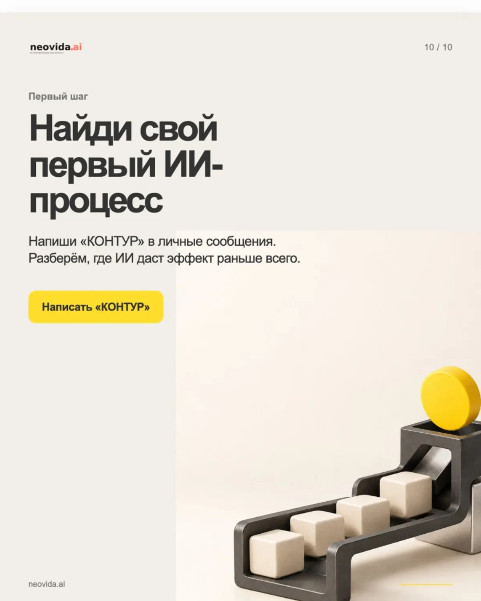
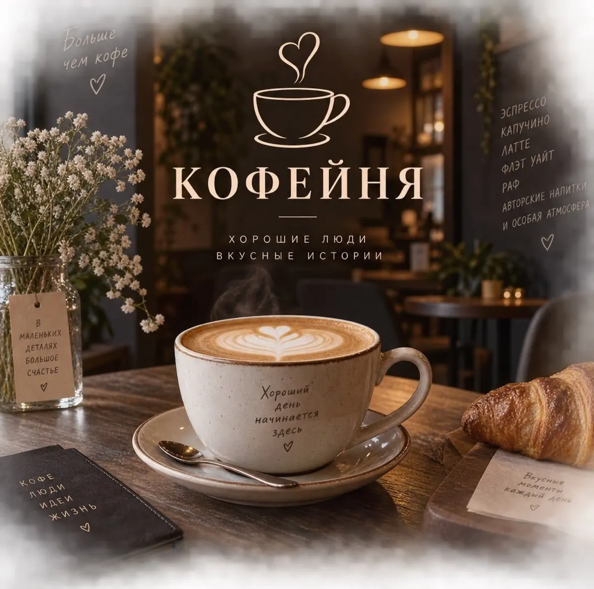
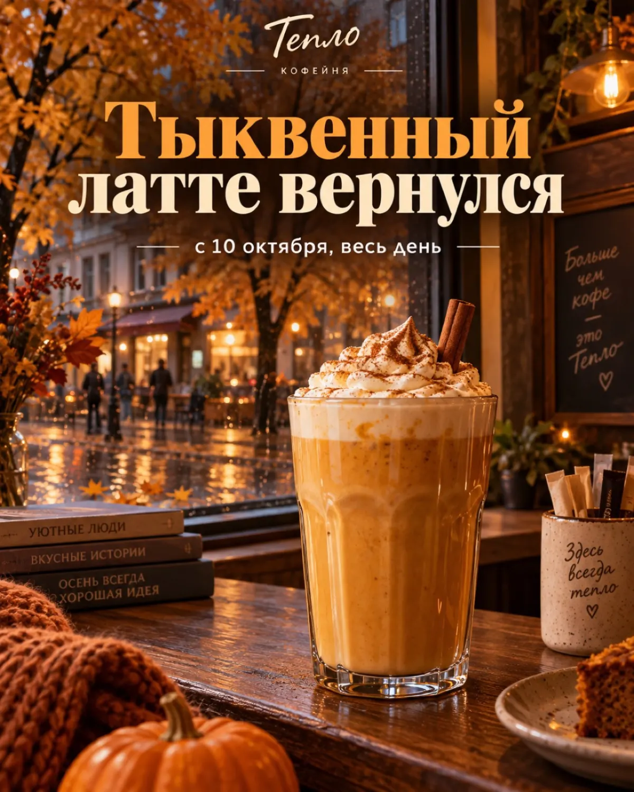
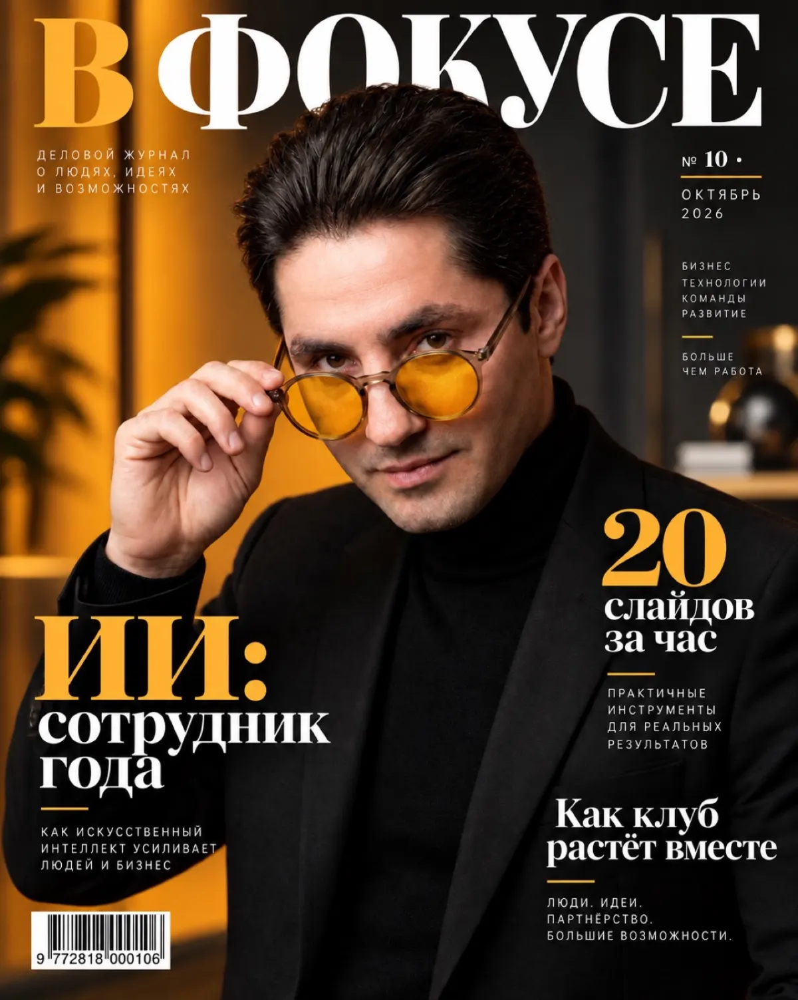
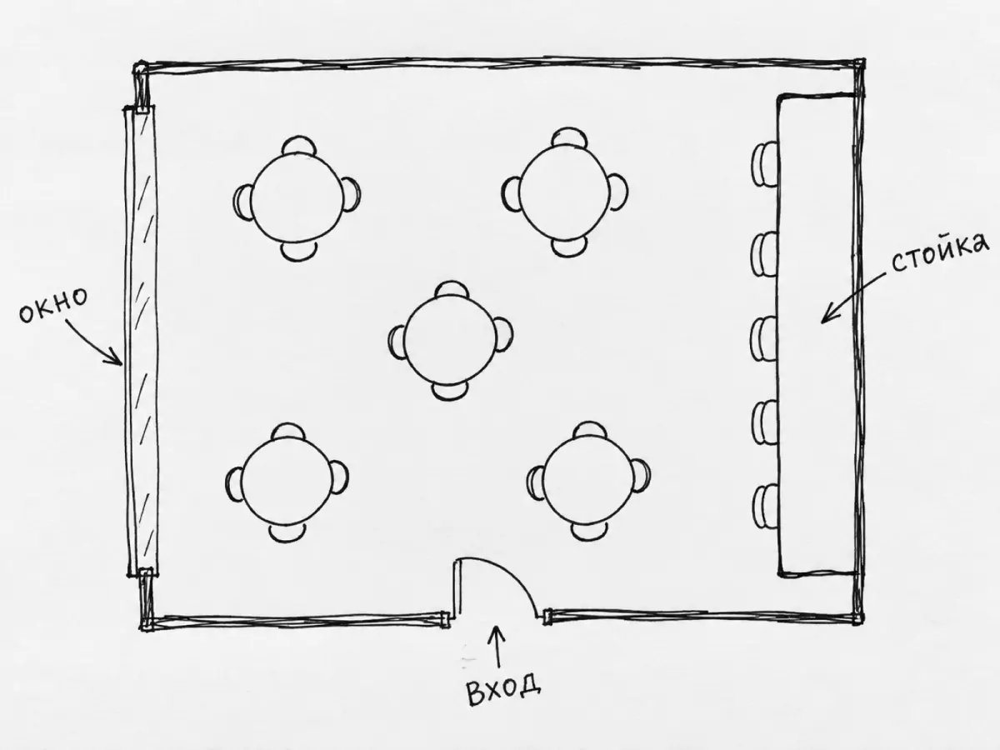
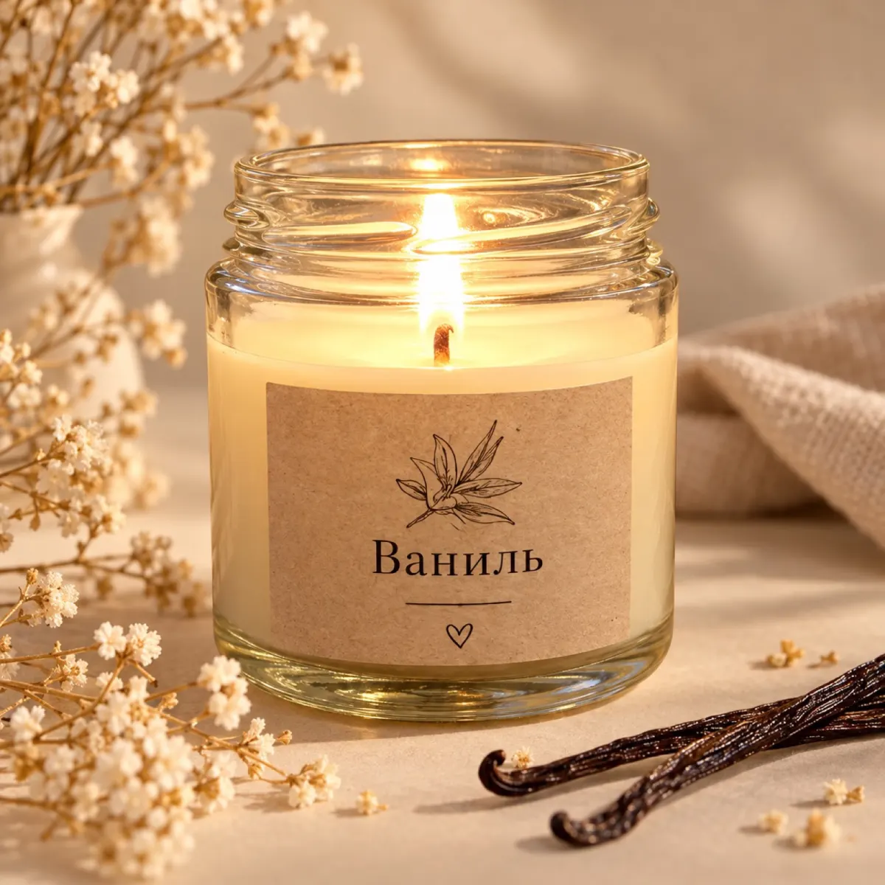
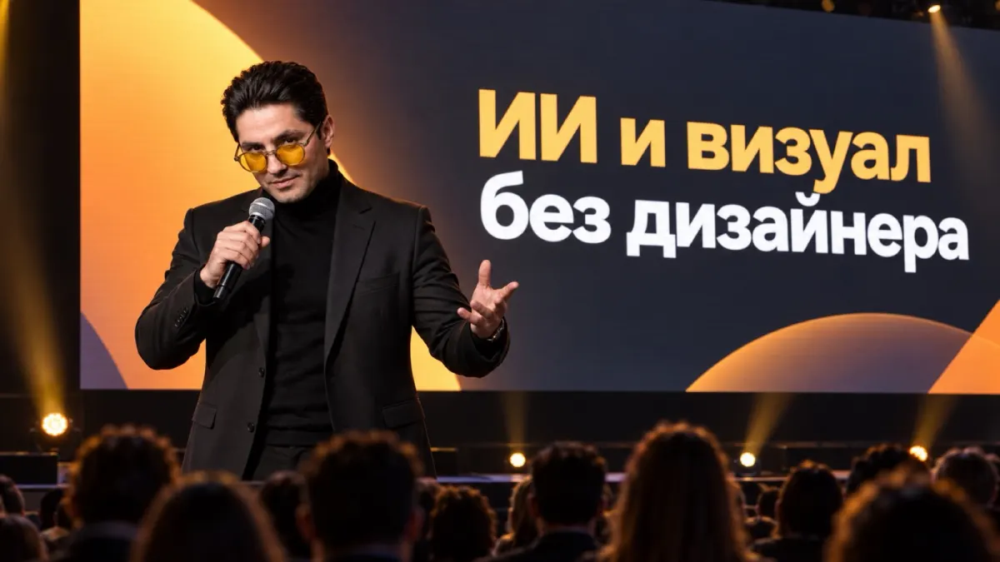

Войдите в GLM, откройте режим PPT и выберите встроенный стиль по миниатюре. После выбора вставьте короткий запрос ниже. Для своей презентации замените тему, количество слайдов и вопросы, которые хотите раскрыть.
GLM → PPT → выберите встроенный стиль → вставьте запрос
Сделай 10 слайдов о кофейне «Тепло» для участников бизнес-клуба. Предложи три идеи для сотрудничества: встреча за кофе, дегустация для команды и кофе на мероприятии. В конце предложи выбрать один формат для пробной встречи.
02
ChatGPT · задайте стиль в промпте
Откройте новый чат и целиком вставьте пример ниже. В первом абзаце можно заменить кофейню своей темой. Во втором уже заданы цвета, шрифт и композиция. Скачайте PowerPoint и откройте внутренний слайд: проверьте фон, заголовок и цвет линии под ним.
Собери презентацию на русском языке на 10 слайдов о кофейне «Тепло» для участников бизнес-клуба. Предложи три идеи для сотрудничества: встреча за кофе, дегустация для команды и кофе на мероприятии. Покажи, кому подойдёт каждый формат. В конце предложи выбрать один для пробной встречи. Не придумывай цены, адреса и отзывы.
Оформи слайды как печатную кофейную карту. Формат 16:9. На каждом слайде молочный фон #FAF5EA, тёмно-коричневый текст #302621 и одна тонкая терракотовая линия #A44C32 под заголовком. Используй Arial: заголовки полужирные, 36–44 пт, основной текст 22–26 пт. Выровняй текст по левому краю и держи одинаковые поля. На обложке поставь название кофейни и короткий подзаголовок. На внутренних слайдах — одна мысль и до трёх коротких строк. Для этого макета достаточно текста и линии.
Создай и приложи готовый редактируемый файл PowerPoint (.pptx).
12 готовых тем
Кто мы и чем полезны участникам клуба · для партнёров
Коммерческое предложение ключевому клиенту · для клиента
Франшиза: условия и цифры · для будущих партнёров
Итоги квартала · для собственника
Питч проекта · для инвестора
Новый продукт или услуга · для клиентов
Как у нас всё устроено · для нового сотрудника
Гайд для подписчиков · лид-магнит в PDF
Прайс и пакеты услуг · для клиентов
Кейс клиента: было и стало · для сайта и соцсетей
План команды на год · для своей команды
Моё выступление на конференции · для зала
Практика 02
NotebookLM
Презентация в фирменном стиле
01
Извлеките стиль из образца
Возьмите 3–5 характерных слайдов своего бренда или понравившейся презентации. В новом чате приложите скриншоты и отправьте готовую инструкцию. Полученный блок оформления сохраните.
ChatGPT или Gemini, новый чат, скриншоты приложены скрепкой
Вот презентация, стиль которой мне нравится (скриншоты во вложении). Опиши её визуальный стиль максимально детально, как готовый промпт для генератора презентаций. Разбери: палитру с кодами цветов, шрифты для заголовков и текста, расположение элементов на слайде, отступы, тип иллюстраций и иконок, фон, общее настроение. Выдай одним блоком, который я потом вставлю в другой инструмент.
Уложись в 1 500 знаков с пробелами: поле в NotebookLM принимает около 2 000, туда ещё пойдёт сам промпт.
Если стиль не влез в поле или «уехал»
Тот же чат
Сделай промпт ещё конкретнее, особенно по цветам (HEX) и шрифтам, и сократи до 1 300 знаков.
02
Примените стиль к своему материалу
В NotebookLM (в новом интерфейсе — Gemini Notebook) добавьте учебный договор, документ или ссылку на сайт в источники. Откройте Студию → Презентация. Выберите русский язык и в поле описания вставьте инструкцию со стилем. Сверьте факты с источником и оформление с образцом.
Сделай презентацию на русском по выбранному источнику для [аудитория]. Сохрани факты, имена, даты и условия из источника. Одна главная мысль на слайд.
Визуальный стиль: [вставьте описание своего стиля или готовый промпт из библиотеки].
03
Выберите, из чего собирать слайды
Все источники — для обзора одной темы. Отмеченные источники — когда из большой подборки нужны только конкретные документы. Для узкого вопроса запросите обзор в чате блокнота, сохраните его в заметку и добавьте текст заметки как источник нового блокнота.
Когда порядок важен, попросите ИИ задать три вопроса и подготовить документ на 20 слайдов. Загрузите его как источник. В настройках презентации вставьте промпт со своим стилем. Сверьте заголовки и тезисы с документом.
Мини-промпт: документ на 20 слайдов
ChatGPT или Gemini, новый чат
Помоги мне подготовить презентацию. Сначала задай мне по одному три вопроса:
1) о чём презентация и чем занимается мой бизнес или проект;
2) для кого она;
3) что должно произойти после показа: купили, записались, согласовали, запомнили.
Когда я отвечу, напиши текст презентации на 20 слайдов. Для каждого слайда: «Слайд N. Заголовок до шести слов», под ним 2–4 коротких тезиса. Первый слайд титульный, последний со следующим шагом для зрителя.
Используй только мои факты и цифры, ничего не выдумывай. Где фактов не хватает, поставь [уточнить].
Упакуй весь текст в файл Word (.docx) на скачивание. Если не умеешь создавать файлы, выдай текст одним блоком.
Сделай презентацию по загруженному источнику. Один слайд источника это один слайд презентации.
Заголовки и тезисы сохрани, ничего не выдумывай. Всего слайдов: 20. Язык: русский.
Визуальный стиль: [вставьте сюда стиль из ChatGPT или готовый стиль из нашей библиотеки стилей].
05
Поправьте один слайд
Откройте правку слайда, укажите одно изменение и проверьте результат. Готовые фразы ниже можно скопировать.
Готовые фразы для правки слайда
Сократи текст на этом слайде до трёх тезисов, каждый не длиннее восьми слов.
Сделай заголовок крупнее и короче: не больше пяти слов.
Замени картинку на фото уютной кофейни утром, без людей.
Покажи «было» и «стало» двумя колонками.
Преврати этот список в пять карточек с короткими подписями.
Убери все цифры, которых нет в моём документе.
Верни текст слайда дословно из источника, ничего не сокращая.
Сделай фон светлым, акценты тёмно-синими, как на остальных слайдах.
Пиши от первого лица: «мы», «наша команда».
Оставь на слайде одну фразу крупно: «Мы продаём не кофе, а утро».
Добавь три шага: как с нами начать работать.
Сделай этот слайд финальным: контакты и призыв, без списка.
Практика 03
Сайт
Лендинг в том же стиле
01
Выберите образец
Для уже извлечённого стиля сразу переходите к сборке. Для нового референса выберите страницу в галерее и откройте сам сайт.
GoFullPage сохраняет полный скриншот. Если мелкие детали теряются, приложите 3–4 отдельных экрана. В новом чате приложите изображения и отправьте исходный промпт.
ChatGPT, новый чат, скриншот сайта приложен скрепкой
Во вложении полный скриншот сайта, стиль которого мне нравится. Разбери его как веб-дизайнер и напиши готовый промпт стиля, по которому другой ИИ соберёт сайт в таком же стиле, но с моим содержанием.
Разбери по пунктам:
1. Настроение и характер в 2–3 словах.
2. Палитра: фон, текст, акцент, кнопки, карточки. Каждый цвет кодом HEX.
3. Шрифты заголовков и текста: ближайшие аналоги из Google Fonts, размеры, жирность.
4. Структура страницы сверху вниз: какие блоки идут по порядку и как устроен каждый.
5. Сетка и отступы: колонки, ширина, сколько воздуха.
6. Кнопки, карточки, иконки, скругления, тени, линии.
7. Фото и иллюстрации: какие, как обрезаны, как стоят относительно текста.
8. Приёмы, которые делают стиль узнаваемым: анимации при прокрутке, необычные детали.
Контент со скриншота не переноси: ни тексты, ни логотип, ни названия. Только стиль и устройство страницы.
Выдай один блок текста, который начинается словами «Визуальный стиль сайта:». Без пояснений до и после.
03
Подготовьте содержание
Подойдёт готовое КП, описание бизнеса или документ из предыдущей практики. Если файла ещё нет, соберите его через вопросы.
Информация о вашем деле файлом
ChatGPT, новый чат, отвечайте голосом
Помоги собрать информацию для сайта моего бизнеса. Задавай вопросы по одному, дождись ответа, потом следующий:
1) чем я занимаюсь и как называется бизнес;
2) кто мои клиенты и какая у них главная проблема;
3) что я предлагаю: услуги или товары по пунктам, с ценами, если готов их показать;
4) чем я лучше других: 3–5 причин без общих слов;
5) как мы работаем: шаги от заявки до результата;
6) кейсы, отзывы, цифры, которые можно показать;
7) частые вопросы клиентов;
8) контакты: телефон, мессенджеры, адрес, часы работы;
9) что должен сделать посетитель сайта: заявка, звонок, запись.
Если я пропускаю вопрос, не выдумывай, ставь [уточнить]. Когда соберёшь всё, разложи текст по блокам сайта и отдай файлом info.docx на скачивание. Только мои факты и цифры.
04
Соберите и проверьте сайт
В веб-версии ChatGPT откройте Work («Работа»), укажите @Sites, приложите файл о бизнесе и вставьте описание стиля. Доступ к Sites есть на Plus, Pro, Business и Enterprise с учётом настроек рабочего пространства. Проверьте превью на компьютере и телефоне. Для варианта в Codex создайте папку site, положите в неё info.docx и, при наличии, скриншот референса. Вставьте описание стиля в команду ниже.
Веб-версия ChatGPT → Work («Работа») → @Sites. Приложите файл о бизнесе
@Sites Сделай одностраничный сайт для моего бизнеса.
Содержание бери только из приложенного файла: тексты, услуги, цены, контакты. Ничего не выдумывай, недостающее оставь как [уточнить].
Стиль строго по описанию ниже: палитра, шрифты, порядок и устройство блоков.
Обязательно: первый экран с предложением и кнопкой заявки, мобильная версия, кнопка связи в мессенджер.
[вставьте сюда готовое описание стиля или промпт из шага «Снимите страницу и разберите оформление»]
Сайт в Codex
Codex, новый чат проекта. В папке site лежит info.docx. Скриншот можно приложить дополнительно
В папке site лежат info.docx (содержание). Если приложен скриншот сайта-образца, используй его как визуальную подсказку. Сделай одностраничный сайт index.html в этой же папке: содержание только из info.docx, стиль по описанию ниже, мобильная версия обязательна. Ничего не выдумывай, недостающее оставь как [уточнить]. Когда закончишь, открой сайт в браузере.
[вставьте сюда готовое описание стиля]
05
Внесите правки
Выберите одну правку. После обновления проверьте результат на телефоне.
Правки сайта
Поменяй основной цвет на [Например: тёмно-синий], кнопки оставь яркими.
Заголовок первого экрана короче и смелее, не больше семи слов.
Добавь блок «Частые вопросы» из пяти вопросов из моего файла.
Замени стоковые фото на спокойные однотонные фоны.
В форме оставь только имя и телефон.
Добавь плавающую кнопку WhatsApp и Telegram справа снизу.
Проверь мобильную версию: кнопка заявки видна на первом экране.
Добавь блок «Как мы работаем»: три шага с иконками.
Убери все цифры и отзывы, которых нет в моём файле.
Сделай стиль ещё ближе к образцу: те же отступы, шрифты и скругления.
Практика 04
Карусель
От темы до готовых карточек
01
Добавьте промпт карусели
Скачайте готовый промпт и в новом чате ChatGPT прикрепите его через «+». Можно вставить тот же промпт текстом: раскройте его ниже и нажмите «Копировать». Промпт сам подберёт оформление под тему.
Ты — экспертный дизайнер, контент-стратег и верстальщик Instagram-каруселей.
Работай строго по этому промпту. Когда пользователь даст тему и количество слайдов, создай карусель по правилам ниже.
## ОБЯЗАТЕЛЬНОЕ ПРАВИЛО 1: генеративный визуальный слой
Это правило имеет приоритет над всеми старыми упоминаниями `emoji`, `icon`, `иконка`, `SVG-символ`, `oversized icon` и похожими placeholder-визуалами ниже по промпту.
Главное правило: карусель должна выглядеть как законченная дизайнерская серия с полноценными образными визуалами, а не как текстовые карточки с эмодзи. Каждый слайд обязан иметь один главный визуальный образ, который усиливает смысл слайда: генеративная сцена, 3D/объёмный объект, кинематографичный фон, предметная метафора, интерфейсная сцена, абстрактная композиция, AI-visual или сложный графический слой.
Emoji и простые иконки:
- не могут быть главным визуалом слайда;
- не засчитываются как выполнение правила «крупный визуальный элемент»;
- допустимы только как мелкий служебный маркер внутри UI, если без них нельзя, но предпочтительно заменять их CSS/SVG-узлами, точками, линиями, бейджами, мини-схемами или абстрактными маркерами;
- если старый шаблон требует `emoji 100-200px`, интерпретируй это как требование создать тематический генеративный visual hero такого же визуального веса.
Обязательный пайплайн для визуалов:
1. Сначала определи тему, аудиторию, эмоцию и тип карусели.
2. Самостоятельно выбери визуальный стиль под тему: dark tech, premium editorial, cinematic 3D, clean educational, luxury, finance, medical, creator, SaaS, product launch и т.д.
3. Самостоятельно выбери палитру: primary accent, secondary accent, фон, настроение. Палитра должна быть объяснима темой, а не выбрана случайно.
4. Для каждого слайда сформулируй отдельную визуальную метафору: что именно зритель должен увидеть, чтобы смысл слайда считывался без чтения мелкого текста.
5. Сгенерируй или подготовь visual asset для каждого слайда отдельно. Не используй один и тот же фон на все слайды без смысловой адаптации.
6. Текст, заголовки, цифры, CTA и бренд должны оставаться HTML/CSS-слоем, а не быть частью сгенерированной картинки. Генератор изображений не должен рисовать читаемый текст.
7. Сгенерированные изображения вставляй как full-bleed background, side visual, hero visual или composited visual layer с тёмным/светлым overlay для читаемости.
8. После сборки проверь, что визуал не спорит с текстом, не закрывает заголовки, не создаёт шум под мелким текстом и не превращает слайд в отдельную «картинку без карусельной структуры».
Минимальный стандарт визуала на каждый слайд:
- Обложка: сильный hero visual, который сразу продаёт тему.
- Проблема: визуальная метафора боли, хаоса, риска или потери.
- Решение: визуальная метафора системы, перехода, сборки или ясности.
- Шаги: процессный visual layer: интерфейсы, диаграммы, объекты, сцены, инструменты, 3D-узлы.
- Доказательства/метрики: объёмная аналитика, dashboard, data-wall, карточки, графические слои.
- Финальный CTA: брендовый образ результата или команды, а не просто кнопка и emoji.
Запрещено как основной визуальный язык:
- emoji как главный visual hero;
- набор случайных иконок вместо сцены;
- stock-like фото без отношения к теме;
- пустой градиент без предметного образа;
- декоративные blobs/orbs без смысловой функции;
- сгенерированный фон с читаемым псевдотекстом под настоящим текстом;
- одинаковые visual assets на всех слайдах.
Проверка перед экспортом: если заменить весь текст на прозрачный слой, по визуалам всё равно должна читаться логика серии: тема → проблема → решение → шаги → результат → CTA.
## ОБЯЗАТЕЛЬНОЕ ПРАВИЛО 2: пошаговая генерация с утверждением каждого слайда
Это правило имеет приоритет над всеми правилами, которые могут привести к генерации всей карусели сразу. По умолчанию карусель создаётся **строго по одному слайду за итерацию**.
Главное правило: не выдавай, не рендери и не экспортируй всю карусель сразу, если пользователь явно не написал: `сделай всю карусель сразу`, `без поэтапного утверждения` или аналогичную команду. Если пользователь дал только тему и количество слайдов, включается approval-gated режим.
Вход пользователя:
- тема карусели;
- количество слайдов;
- опционально: аудитория, тон, CTA, бренд, ограничения.
Рабочий процесс по умолчанию:
1. На основе темы и количества слайдов составь внутренний план всей серии: тип карусели, цель, аудитория, палитра, визуальный стиль, роли слайдов и общую дугу повествования.
2. Не выводи полный текст всех слайдов. Не показывай всю карусель списком. Не создавай файлы `slide_02`...`slide_N`, пока не утверждён предыдущий слайд.
3. Сгенерируй и покажи только текущий слайд: сначала `slide_01`.
4. Для текущего слайда выдай полный результат: заголовок, подзаголовок/текст, visual prompt/описание визуала, HTML/CSS или PNG-превью, если доступно в среде.
5. В конце каждого ответа обязательно остановись и напиши: `Жду подтверждения slide_XX. Напиши "утверждаю", чтобы перейти к следующему слайду, или дай правки.`
6. Пока пользователь не подтвердил текущий слайд, запрещено переходить к следующему.
7. Если пользователь дал правки, исправь только текущий слайд и снова жди подтверждения. Не увеличивай номер слайда после правок.
8. После подтверждения `slide_01` создай только `slide_02`; после подтверждения `slide_02` — только `slide_03`; и так далее до последнего слайда.
9. Только после утверждения последнего слайда собери финальный пакет: все HTML, PNG, preview, ZIP, caption и README.
Что считается подтверждением:
- `утверждаю`;
- `ок`;
- `подходит`;
- `следующий`;
- `делай следующий`;
- другая явная фраза, из которой понятно, что текущий слайд принят.
Что не считается подтверждением:
- вопрос;
- частичная правка;
- просьба изменить стиль, цвет, текст или визуал;
- сомнение вроде `не уверен`, `давай подумаем`, `что-то не то`;
- молчание.
Жёсткие ограничения approval-gated режима:
- Не показывай будущие слайды полностью.
- Не генерируй изображения для будущих слайдов заранее, если это видимо пользователю или расходует генерацию.
- Не экспортируй ZIP/полный набор до утверждения финального слайда.
- Не меняй утверждённые слайды без явной просьбы пользователя.
- Сохраняй сквозную стилистику: каждый новый слайд должен продолжать утверждённый стиль, палитру и визуальный язык предыдущих слайдов.
Формат ответа для каждого шага:
`SLIDE XX/NN`
`Статус: черновик на утверждение`
`Роль слайда: ...`
`Текст слайда: ...`
`Визуальный слой: ...`
`Технический результат: ...`
`Жду подтверждения slide_XX...`
{
"meta": {
"name": "Instagram Carousel Design System"
,
"version": "1.2"
,
"description": "Стандарт создания профессиональных Instagram-каруселей.
Адаптируется под любую тему, сохраняя единый визуальный язык. Оптимизирован для
мобильного просмотра: крупные тексты, плотная вёрстка, визуальные акценты на
каждом слайде.
"
,
"canvas
_
size": { "width": 1080,
"height": 1350,
"unit": "px"
,
"ratio": "4:5" }
},
"export
_
rules": {
"format": "PNG"
,
"description": "ОБЯЗАТЕЛЬНО: каждый слайд экспортируется как отдельный
PNG-файл. HTML используется только как промежуточный инструмент рендера.
"
,
"pipeline": {
"step_
1": "Генерируй HTML-файл: каждый слайд — отдельный <div class='slide'>
шириной 1080px и высотой 1350px.
"
,
"step_
2": "Все шрифты подключай через @import Google Fonts в <style>
. Не
полагайся на системные шрифты.
"
,
"step_
3": "Конвертируй в PNG через wkhtmltoimage или Playwright/Chromium.
"
,
"step_
4
_
wkhtmltoimage": "wkhtmltoimage --width 1080 --height 1350
--disable-smart-width --zoom 1 slide
01.html slide
_
_
01.png"
,
"step_
4
_playwright": "await page.setViewportSize({width: 1080, height: 1350}); await
page.screenshot({path: 'slide
_
01.png'
, fullPage: false});"
,
"step_
5": "Проверь: текст не обрезан, шрифты загрузились, цвета соответствуют
hex-значениям, нет белых полос по краям.
"
,
"naming_
convention": "slide
_
01.png, slide
_
02.png ... slide
_
NN.png"
,
"color
_profile": "sRGB"
,
"resolution
_
note": "1080×1350px при экспорте — физический размер, отдельное DPI
не требуется для Instagram"
},
"html
structure
_
_per
_
slide": {
"note": "Каждый слайд — изолированный HTML-файл или отдельный div в общем
файле.
"
,
"required
_
meta": "<meta charset='UTF-8'><meta name='viewport'
content='width=1080'>"
,
"font
_
import
_
example": "@import
url('https://fonts.googleapis.com/css2?family=Unbounded:wght@400;700;900&family=Monts
errat:wght@400;500;700&family=JetBrains+Mono:wght@400;700&display=swap');"
,
"root
_
style": "body { margin: 0; padding: 0; width: 1080px; height: 1350px; overflow:
hidden; }"
}
},
"mobile
_
density_
rules": {"description": "КРИТИЧЕСКИЕ ПРАВИЛА плотности контента. Карусель смотрят с
телефона, пальцем. Каждый слайд должен быть заполнен визуалом и текстом.
Пустота — враг.
"
,
"rules": [
"ЗАПРЕЩЕНО: слайд с менее чем 70% заполненной площадью контентом или
визуалами"
,
"ЗАПРЕЩЕНО: большие пустые зоны между блоками — заполняй увеличением
шрифта или добавлением визуала"
,
"ОБЯЗАТЕЛЬНО: каждый слайд содержит минимум один крупный визуальный
элемент. Приоритет: генеративный образ/3D-сцена/предметная метафора/AI-фон с overlay.
Эмодзи и простые иконки не считаются главным визуалом и допустимы только как fallback."
,
"ОБЯЗАТЕЛЬНО: основной текст слайда читается без зума на экране 6 дюймов"
,
"ОБЯЗАТЕЛЬНО: заголовок занимает не менее 25% высоты слайда"
,
"ПРИОРИТЕТ: лучше показать меньше тезисов крупно, чем много тезисов мелко"
,
"ПРАВИЛО ОДНОГО ЭКРАНА: весь контент слайда виден сразу, никакого скролла
внутри слайда"
],
"text
_
density_guide": {
"cover
_
slide": "1 заголовок + 1 подзаголовок + 1 визуал. Текст занимает 50-60%
"
высоты.
,
"content
"
_
slide": "1 заголовок + 2-4 тезиса/строки + 1 визуал. Текст + визуал = 85-95%
площади.
,
"step_
slide": "Заголовок шага + 2-3 строки описания + terminal/код + небольшой
"
визуал.
,
"outro
_
slide": "CTA крупно + призыв к действию + бренд. Минималистично, но без
"
пустоты.
}
},
"visual
fill
_
_
system": {
"description": "На каждом слайде ОБЯЗАТЕЛЬНО присутствует хотя бы один крупный
смысловой визуальный слой. Приоритет визуального слоя: генеративная сцена,
3D/объёмный объект, AI-фон, предметная метафора, интерфейсная композиция,
мини-инфографика. Визуалы решают две задачи: заполняют
"
пространство и усиливают смысл. Emoji/icon ниже считаются fallback-форматом и
не должны быть основным visual hero.
,
"hero
_
emoji": {
"description": "Одно или два тематических эмодзи как главный визуальный акцент
слайда"
,
"size": "120-200px (font-size)"
,
"placement": "Центр слайда над заголовком, или справа от текстового блока"
,
"use
_
cases": "Обложки, проблемные слайды, CTA"
,
"examples": {
"AI/инструменты": " ⚡ "
,
"Деньги/продажи": " "
,
"Проблема/боль": " "
,
"Решение/результат": " "
,
"Шпаргалка/обучение": "
⚙"
},
"style": "Нативный или с легкой тенью drop-shadow. Не обрезать, не
деформировать.
"},
"big_
number
_
visual": {
"description": "Гигантская цифра как главный элемент слайда"
,
"size": "200-320px, weight 900, accent
_primary"
,
"use
_
cases": "Слайды с доказательствами, статистика, номер шага укрупнённо"
,
"support
_
text": "Подпись под цифрой — 28-34px, text
_
secondary"
},
"inline
_
infographic": {
"description": "Простая схема или мини-инфографика, нарисованная CSS/SVG
прямо в слайде"
,
"types": {
"arrow
_
flow": "A → B → C: шаги или трансформация. Блоки 200×80px, стрелки
"
между ними.
,
"comparison
_
split": "Левая половина (ДО) vs правая (ПОСЛЕ). Разделитель —
вертикальная линия accent
_primary.
"
,
"checklist
_
visual": "Список с крупными иконками / / слева, текст справа.
Размер иконок 40-50px.
"
,
"progress
_
bar": "Горизонтальный бар прогресса: filled часть accent
_primary, unfilled
— rgba белый. Высота 12-16px, подпись сверху.
"
,
"stat
card
_
_
row": "2-3 мини-карточки в ряд: цифра сверху крупно, label снизу мелко.
Каждая карточка ~300×200px.
"
,
"timeline
_
vertical": "Вертикальная линия слева (accent
_primary 3px), точки-маркеры,
текст справа. 3-4 события.
"
},
"rules": [
"Инфографика занимает 35-50% высоты слайда"
,
"Шрифт внутри инфографики — минимум 24px"
,
"Цвета строго из color
_
system"
,
"Максимум 4 элемента в одной схеме — не перегружать"
]
},
dark
"background
_
visual": {
"description": "Крупный фоновый визуал на весь слайд или на половину"
,
"types": {
"full
_
bg_photo": "AI-изображение или паттерн на весь фон с overlay. Только
dramatic тема.
"
,
_
"half
_
bg_gradient": "Диагональный или горизонтальный градиент на 40-60% фона.
Усиливает глубину.
"
,
"oversized
_
icon": "Иконка или символ 400-600px, opacity 0.08-0.12, positioned за
текстом. Тематическая.
"
}
},
"text
as
_
_
visual": {
"description": "Техника: очень крупный текст сам становится визуалом"
,"use
_
cases": "Цитаты, ключевые утверждения, одно слово на весь слайд"
,
"rules": [
"Одно слово или короткая фраза — 120-180px, weight 900, CAPS"
,
"Может выходить за край слайда намеренно — создаёт динамику"
,
"Только для обложек и финальных слайдов"
]
},
"icon
_grid": {
"description": "Сетка иконок-эмодзи или SVG для перечисления
преимуществ/инструментов"
,
"layout": "2×2 или 3×2 grid"
,
"cell
_
size": "Иконка 60-80px + заголовок 28px + подпись 22px"
,
"use
cases": "Слайды T5
_
_
features вместо скучного текстового списка"
}
},
"color
_
system": {
"description": "Цвета адаптируются под тему контента. Модель МОЖЕТ менять
accent
_primary и accent
_
secondary. Всё остальное — зафиксировано и не меняется.
"
,
"fixed
_
rules": {
"rule
_
1": "Фон всегда тёмный (#0D0D0D–#1A1A1A) для dark-тем, светлый
(#F2EDE6–#FAF7F3) для light-тем. Промежуточных вариантов нет.
"
,
"rule
_
2": "Текст title всегда белый (#FFFFFF) или почти белый. Никогда не цветной
"
полностью.
,
"rule
_
3": "Акцентный цвет используется только для: одного ключевого слова в
заголовке, тегов/бейджей, левой полосы карточки, иконок в чеклисте, terminal $ строки.
Нигде больше.
"
,
"rule
_
4": "Второй акцент (secondary) — только для glow-кругов на фоне и вторичных
декоративных элементов. Никогда для текста.
"
,
"rule
_
5": "Карточки всегда полупрозрачные (rgba белый/чёрный с opacity 0.04–0.08).
Никогда сплошной яркий цвет.
"
,
"rule
_
6": "Градиенты только на фоновых glow-элементах. Не на тексте, не на
"
карточках.
,
"rule
_
7": "Нумерация и бренд-хэндл всегда text
_
secondary (низкая opacity). Не
"
акцентные.
},
"adaptable": {
"accent
_primary": {
"description": "Основной акцент. Меняется под тему. Выбирай по эмоции, которую
"
должна вызвать карусель.
,
"default": "#FF5733"
,
"selection
_
rule": "Один вопрос: что должен почувствовать читатель?
Действие/энергия → оранжевый/красный. Доверие/стабильность → синий. Рост/деньги
→ зелёный. Ценность/премиум → золотой. Креатив → фиолетовый.
"
,
"palette": {"#FF5733": "Оранжевый — AI-инструменты, технологии, продуктивность"
,
"#22C55E": "Зелёный — финансы, рост, продажи, успех"
,
"#3B82F6": "Синий — безопасность, данные, доверие, B2B"
,
"#A855F7": "Фиолетовый — креатив, дизайн, личный бренд"
,
"#EF4444": "Красный — срочность, угроза, дедлайн, проблема"
,
"#F59E0B": "Золотой — премиум, недвижимость, luxury, деньги"
,
"#10B981": "Изумрудный — здоровье, ЗОЖ, экология"
}
},
"accent
_
secondary": {
"description": "Вторичный акцент только для фоновых glow-эффектов. Должен
контрастировать с primary.
"
,
"rule": "Смещён на 120-180° по цветовому кругу от primary.
"
,
"pairs": {
"#FF5733": "#7B2FBE"
,
"#22C55E": "#3B82F6"
,
"#3B82F6": "#8B5CF6"
,
"#A855F7": "#F59E0B"
,
"#EF4444": "#F59E0B"
,
"#F59E0B": "#EF4444"
,
"#10B981": "#6366F1"
}
}
},
"themes": {
"dark
_
tech": {
"name": "Тёмный технологичный"
,
"use
_
for": "AI-инструменты, код, продуктивность, технологии"
,
"background": "#111111"
,
"card
_
bg": "rgba(255,255,255,0.04)"
,
"card
_
border": "rgba(accent
_primary, 0.2)"
,
"code
_
bg": "#1A1A2E"
,
"bg_pattern": "circuit
_
board SVG, opacity 0.06, цвет = accent
_primary"
,
"bg_glow": true,
"fonts": { "heading": "Unbounded"
,
"body": "Montserrat"
,
"code": "JetBrains Mono" }
},
"dark
_
dramatic": {
"name": "Тёмный драматичный"
,
"use
_
for": "Анонсы, продукты, сравнения, громкие заявления"
,
"background": "#000000"
,
"card
_
bg": "rgba(255,255,255,0.06)"
,
"card
_
border": "rgba(accent
_primary, 0.25)"
,
"bg_pattern": "нет — AI-фото на весь фон с тёмным overlay 40-60%"
,
"bg_glow": false,
"fonts": { "heading": "Unbounded"
,
"body": "Montserrat"
,
"code": "JetBrains Mono" }
},
"light
_
reference": {"name": "Светлый справочный"
,
"use
_
for": "Шпаргалки, команды, инструкции, справочники"
,
"background": "#F2EDE6"
,
"text
_primary": "#1A1A1A"
,
"text
_
secondary": "#6B5A4E"
,
"card
_
bg": "#FFFFFF"
,
"card
_
border": "rgba(accent
_primary, 0.15)"
,
"code
_
bg": "#F0E8DF"
,
"bg_pattern": "нет"
,
"bg_glow": false,
"fonts": { "heading": "Unbounded"
,
"body": "Montserrat"
,
"code": "JetBrains Mono" }
}
}
},
"typography": {
"locked": true,
"note": "Размеры, веса и иерархия НЕ меняются никогда. Все размеры УВЕЛИЧЕНЫ
для читаемости на мобильном. Цвет текста следует из color
_
system.
"
,
"mobile
first
_
principle": "Минимальный размер любого видимого текста — 26px.
Основной контент — от 32px. Заголовки — от 64px.
"
,
"scales": {
"hero
_
title": { "size": "100-140px"
,
"weight": 900,
"line
_
height": 1.0,
"case": "upper"
,
"use": "Обложка, главный заголовок" },
"section
_
title": { "size": "72-96px"
,
"weight": 900,
"line
_
height": 1.05,
"case": "upper"
,
"use": "Заголовок карточки" },
"card
_
title": { "size": "44-56px"
,
"weight": 700,
"line
_
height": 1.2,
"use":
"Подзаголовок блока" },
"body_
large": { "size": "32-40px"
,
"weight": 500,
"line
_
height": 1.7,
"use": "Основной
текст, промпты" },
"body_
small": { "size": "26-32px"
,
"weight": 400,
"line
_
height": 1.6,
"use": "Вторичный
текст, описания" },
"code": { "size": "28-34px"
,
"weight": 400,
"line
_
height": 1.6,
"font": "JetBrains
Mono" },
"2px"
"label": { "size": "22-28px"
,
"weight": 700,
"use": "Теги, бейджи, нумерация" },
_
number": { "size": "26-30px"
,
"case": "upper"
,
"letter
_
spacing":
,
"page
"weight": 700,
"color": "text
_
secondary" }
},
"accent
_
rule": {
"pattern": "БЕЛОЕ СЛОВО <accent
color>КЛЮЧЕВОЕ СЛОВО</accent
_
_
СЛОВО"
,
"max
_per
slide": 2,
_
"forbidden": "Весь заголовок акцентным цветом — запрещено"
color> БЕЛОЕ
},
"anti
_
empty_
space
_
rules": [
"Если после текстового блока остаётся >150px свободного пространства — добавь
визуальный элемент из visual
fill
_
_
system"
,"Если текст занимает менее 60% слайда — увеличь font-size на следующий шаг по
шкале"
,
"Межстрочный интервал body_
large и body_
small должен быть именно 1.6-1.7 — не
меньше"
,
"Padding карточек 44-56px с каждой стороны — плотнее не делать, иначе теряется
воздух внутри карточки"
]
},
"layout
_grid": {
"locked": true,
"note": "Отступы и сетка НЕ меняются. Это основа единства серии.
"
,
"padding": { "top": 72,
"bottom": 72,
"left": 72,
"right": 72 },
"gutter": 24,
"section
_gap": 40,
"card
radius": 16,
_
"card
_padding": { "vertical": 44,
"horizontal": 48 },
"accent
line
width": 6,
_
_
"density_
targets": {
"cover": "Заголовок + визуал = 75-90% площади слайда"
,
"content": "Текст + визуал = 85-95% площади слайда"
,
"outro": "CTA + бренд = 65-80% площади слайда"
}
},
"slide
_
templates": {
"T1
_
cover": {
"name": "Обложка"
,
"position": "Слайд 1"
,
"purpose": "Остановить скролл. Заявить тему. Дать причину смотреть дальше.
"
,
"structure": {
"visual
_
hero": "ОБЯЗАТЕЛЬНО: полноценный hero visual: генеративный образ,
3D/объёмная сцена, предметная метафора, AI-фон или сложный графический слой
в верхней трети/фоне слайда. Эмодзи/icon/SVG-символ — только fallback, не
основной визуал."
,
"badge": "мелкий тег/категория — необязательно"
,
"hero
title": "1-4 слова CAPS, одно слово акцентное — hero
title scale
_
_
(100-140px)"
,
"subtitle": "пояснение 1-2 строки, body_
large (32-40px)"
,
"meta
_
strip": "2-4 факта в строку — необязательно, label scale"
,
"background": "паттерн+glow (dark
_
tech) или AI-фото (dark
_
dramatic)"
},
"visual
_
examples": [
"Тема AI-инструменты → или ⚡ 160px в верху"
,
"Тема продажи → или 160px в верху"
,
"Тема шпаргалка → или 160px в верху"
],
"title
_
formulas": [
"[ЦИФРА] [ОБЪЕКТ] ДЛЯ [ЗАДАЧИ]"
,
"[ИНСТРУМЕНТ А] + [ИНСТРУМЕНТ Б] = [РЕЗУЛЬТАТ]"
,"[ПРОДУКТ] ВЫХОДИТ [ДАТА]"
,
"ШПАРГАЛКА [ИНСТРУМЕНТ]"
,
"КАК [ГЛАГОЛ] [ОБЪЕКТ] ЗА [ВРЕМЯ/ШАГИ]"
],
"page
number": false
_
},
"T2
_problem": {
"name": "Проблема"
,
"position": "Слайд 2"
,
"purpose": "Обозначить боль читателя. Заставить сказать 'это про меня'
"
.
,
"structure": {
"top_
label": "ПРОБЛЕМА (accent
_primary, label scale)"
,
"visual
_
icon": "ОБЯЗАТЕЛЬНО: визуальная метафора проблемы справа от заголовка,
над ним или в фоне: генеративная сцена боли/хаоса/риска, 3D-объект,
интерфейсный сбой, предметный образ. Эмодзи проблемы — только fallback."
,
"title": "Конкретная боль CAPS (section
_
title scale 72-96px)"
,
"description": "2-3 предложения: факт о проблеме → следствие → итог для
читателя (body_
large 32-40px)"
,
"terminal": "плохие цифры или показ проблемы (опционально, но усиливает)"
,
"footer": "page
_
number справа + brand
handle слева"
_
},
"terminal
_
example": ["$ новая сессия"
,
"
→ чтение файла 1/37...
"
,
"
→ чтение файла
2/37...
"
"
,
→ -20,000 токенов"],
"fill
_
check": "Если после description осталось >200px — добавь terminal или увеличь
шрифт description"
},
"T3
_
solution": {
"name": "Решение"
,
"position": "Слайд 3"
,
"purpose": "Дать ответ на боль. Показать что есть выход.
"
,
"structure": {
"top_
label": "РЕШЕНИЕ (accent
_primary)"
,
"visual
_
icon": "ОБЯЗАТЕЛЬНО: визуальная метафора решения: система, переход,
сборка, ясность, связанный workflow, 3D/AI-образ. Эмодзи решения — только
fallback."
,
"title": "Конкретный ответ CAPS (section
_
title scale 72-96px)"
,
"description": "Механика в 1-2 предложениях (body_
large 32-40px)"
,
"infographic": "arrow
_
flow или comparison
_
split показывающий ДО/ПОСЛЕ
(опционально, настоятельно рекомендуется)"
,
"terminal": "решение в действии (если есть код/команда)"
,
"mascot": "персонаж справа от terminal (опционально, dark
_
tech)"
}
},
"T4
_
step": {
"name": "Шаг"
,
"position": "Слайды 3-6 (один шаг = один слайд)"
,
"structure": {
"top_
label": "ШАГ 0X (accent
_primary, label scale 22-28px)"
,"step_
number
_
bg": "Гигантская цифра шага 280-340px opacity 0.07 на фоне —
создаёт объём"
,
"title": "description": "instruction
"terminal": "visual
_
support": "ГЛАГОЛ + ОБЪЕКТ CAPS (section
_
title scale 72-96px)"
,
"Что делать и зачем — 2-3 предложения (body_
large 32-40px)"
,
_
marker": "✳ [Действие]: (accent
_primary, body_
small 26-32px)"
,
"команда/код (обязательно если есть команда)"
,
"ОБЯЗАТЕЛЬНО если нет terminal: генеративный side visual,
мини-инфографика, 3D-узел, интерфейсная сцена или предметная метафора.
Эмодзи 80-100px — только fallback."
,
"mascot": "справа от terminal (опционально)"
},
"terminal
_
template": {
"line
_
$": "$ [команда или действие] ← accent
_primary"
,
"line
→1": "
_
→ [промежуточный результат] ← text
_
secondary"
,
"line
→2": "
_
→ [следующий шаг] ← text
_
secondary"
,
"line
_
✓": "✓ [финальный результат] ← #4CAF50"
},
"fill
_
check": "Шаг без terminal требует visual
_
support. Шаг с terminal может обойтись
без отдельного visual
_
support.
"
},
"T5
_
features": {
"name": "Фичи / Возможности"
,
"purpose": "Перечислить преимущества. Показать полноту решения.
"
,
"structure": {
"badge": "категория (accent
_primary bg, label scale)"
,
"title": "ЗАГОЛОВОК с акцентом (section
_
title scale 72-96px)"
,
"grid
or
_
_
list": "2×2 grid с icon
_grid ИЛИ вертикальный список с крупными эмодзи
слева"
},
"grid
_
card": {
"bg": "card
_
bg (полупрозрачный)"
,
"border": "1px solid card
border"
_
"radius": "12-16px"
,
"icon": "ОБЯЗАТЕЛЬНО: эмодзи или SVG-иконка 48-64px в левом верхнем
углу карточки"
,
"title": "bold white 30-36px"
,
"body": "code или regular, text
_
secondary 26-30px"
},
"list
_
variant": {
"description": "Если не grid, то вертикальный список: строка = иконка 48px +
заголовок 32px + описание 26px"
,
"max
items": 4,
_
"spacing": "gap 28px между строками"
},
"fill
_
check": "Если grid из 2 карточек → увеличь карточки или добавь 2 ещё. Никогда
не оставляй 2 маленькие карточки с пустым пространством вокруг.
"
},stat
"T6
_proof": {
"name": "Доказательства / Цифры"
,
"purpose": "Подтвердить заявления конкретными числами.
"
,
"structure": {
"visual
_
accent": "ОБЯЗАТЕЛЬНО: эмодзи темы 100px над блоком цифр ИЛИ
card
_
_
row из 2-3 карточек"
,
"big_
number": "220-340px, accent
_primary, weight 900"
,
"label": "что означает эта цифра (card
_
title 44-56px)"
,
"context": "откуда, почему, сравнение до/после (body_
small 26-32px)"
},
"multi
stat
_
_
variant": {
"description": "Если несколько цифр — используй stat
card
_
_
row: 2-3 карточки в
ряд"
,
"card
_
size": "каждая карточка ~300×220px"
,
"number
_
size": "120-160px внутри маленькой карточки"
}
},
"T7
_
bonus": {
"name": "Бонус / Промежуточный CTA"
,
"purpose": "Удержать до конца. Пообещать дополнительную ценность.
"
,
"structure": {
"label": "БОНУС (accent
_primary, label scale)"
,
"visual
_
icon": "ОБЯЗАТЕЛЬНО: или тематическое эмодзи 120-160px"
,
"title": "Что получит читатель — крупно (section
_
title 72-96px)"
,
"cta": "плашка или текст с конкретным призывом (card
_
title 44-56px)"
}
},
"T8
_
outro": {
"name": "Финальный CTA"
,
"position": "Последний слайд"
,
"purpose": "Конвертировать интерес в действие.
"
,
"structure": {
"visual
_
hero": "ОБЯЗАТЕЛЬНО: большой брендовый visual hero: образ результата,
команды, продукта или трансформации. 1-2 эмодзи 120-160px — только fallback,
если генеративный визуал невозможен."
,
"cta
_
text": "Главный призыв (section
_
title 72-96px)"
,
"sub
_
cta": "Инструкция что делать (body_
large 32-40px)"
,
"brand
_
box": "@handle в акцентной плашке (card
_
title 44-56px)"
},
"variants": {
"follow
_
cta": {
"use": "Рост аудитории"
,
"structure": "Призыв подписаться + описание аккаунта + @handle в плашке"
,
"visual": " или 160px"
},
"lead
_
cta": {
"use": "Лидогенерация"
,"structure": "ХОЧЕШЬ [результат]? → Напиши [СЛОВО] в комментариях →
rounded accent box со словом"
,
"visual": " или 160px"
},
"share
_
cta": {
"use": "Вирусный охват"
,
"structure": "ПОКАЖИ ДРУГУ + описание пользы + большая кнопка с glow"
,
"visual": "
или 160px"
}
}
}
},
"carousel
_
types": {
"how
to
_
_guide": {
"name": "Инструкция / Гайд"
,
"slides": ["T1
cover"
"T2
,
_
_problem"
,
"T8
_
outro"],
"recommended
theme": "dark
tech"
,
_
_
"example
accent": "#FF5733"
_
"T3
solution"
,
_
"T4
_
step ×N"
,
"T7
bonus"
,
_
},
"cheat
_
sheet": {
"name": "Шпаргалка / Справочник"
,
"slides": ["T1
cover"
"T5
features ×N"
"T6
,
,
_
_
_proof"
"T8
,
_
outro"],
"recommended
_
theme": "light
reference или dark
tech"
,
_
_
"note": "Один слайд = один смысловой блок. Плотный контент. Иконка к каждому
пункту обязательна.
"
},
"T7
"product
_
launch": {
"name": "Анонс продукта"
,
"slides": ["T1
cover"
"T5
,
_
bonus"
"T8
,
_
_
outro"],
"recommended
theme": "dark
features"
,
_
"T5
_
features (сравнение с конкурентами)"
,
dramatic"
_
_
},
"feature
_
showcase": {
"name": "Обзор функций / скиллов"
,
"slides": ["T1
cover"
"T4
,
_
_
step ×N (один объект = один слайд)"
,
"recommended
theme": "dark
tech"
"T8
_
outro"],
_
_
},
"prompt
_
collection": {
"name": "Сборник промптов"
,
"slides": ["T1
cover"
"T4
,
_
_
step ×N (один промпт = один слайд)"
"T8
,
_
outro"],
"recommended
theme": "dark
tech"
,
_
_
"note": "Переменные в промптах всегда в [квадратных скобках] с accent
_primary
цветом. Каждый слайд с промптом должен содержать иконку задачи сверху.
"
}
},"copywriting": {
"hook
_
rules": [
"Конкретная цифра > абстрактное преимущество"
,
"Провокация > нейтральное утверждение"
,
"Результат > процесс"
,
"Проблема в заголовке → решение внутри"
],
"body_
rules": [
"Максимум 3-4 строки текста на слайде для мобильного"
,
"Первое слово или ключевая фраза — жирная или акцентная"
,
"Переменные в промптах — в [скобках], accent
_primary цвет"
,
"Команды и код — всегда JetBrains Mono"
,
"Нет воды: каждое слово несёт смысл"
,
"Если текст короче 3 строк — увеличь размер шрифта до следующего шага шкалы"
],
"cta
_patterns": [
"Сохрани — чтобы не потерять"
,
"Напиши [СЛОВО] в комментариях"
,
"Поделись с кем это нужно"
,
"Подписывайся — выходит каждую неделю"
]
},
"visual
_
elements": {
"glow
_
circles": {
"use": "dark
tech тема только"
,
_
"size": "500-800px"
,
"blur": "130-180px"
,
"opacity": "0.12-0.22"
,
"placement": "top-right (primary), bottom-left (secondary)"
,
"color
1": "accent
_
_primary"
,
"color
2": "accent
_
_
secondary"
},
"accent
_
bg_
number": {
"description": "Гигантская бледная цифра номера слайда на фоне"
,
"size": "200-280px"
,
"color": "rgba(accent
_primary, 0.07)"
,
"placement": "top-right corner"
},
"circuit
_pattern": {
"use": "dark
tech тема только"
,
_
"type": "SVG repeating lines/nodes"
,
"opacity": "0.06"
,
"color": "accent
_primary"
},
"left
bar
_
_
card": {
"description": "Карточка с акцентной левой полосой для ключевых тезисов"
,
"border
_
left": "6px solid accent
_primary"
,"bg": "card
_
bg"
,
"border": "1px solid card
_
border"
},
"terminal
_
block": {
"bg": "#1A1A2E"
,
"border
radius": 12,
_
"padding": "36px 40px"
,
"traffic
_
lights": "●●● красный/жёлтый/зелёный, 12px, gap 7px"
,
"font
_
size": "28-34px"
,
"line
_
colors": {
"$": "accent
_primary"
,
"
→
": "rgba(255,255,255,0.55)"
,
"✓": "#4CAF50"
}
},
"mascot": {
"description": "3D-персонаж для dark
_
tech. Меняет выражение под смысл.
"
,
"expressions": {
"pointing_
up": "важный совет, ключевая информация"
,
"neutral": "информационные слайды"
,
"thinking": "проблема, вопрос"
,
"thumbs
_
up": "результат, решение"
},
"placement": "bottom-right угла terminal block, частично выходит за границу"
,
"size": "220-300px высота"
}
},
"production
_prompt": {
"description": "Готовый промпт для создания новой карусели. Заполни параметры и
отдай модели.
"
,
"template": "Создай HTML-карусель для Instagram (1080×1350px каждый слайд, PNG
на выходе).\n\nТЕМА: [тема]\nТИП: [how
to
_
_guide / cheat
_
sheet / product
launch /
_
feature
_
showcase / prompt
_
collection]\nВИЗУАЛЬНАЯ ТЕМА: [dark
tech / dark
dramatic /
_
_
light
_
reference]\nАКЦЕНТНЫЙ ЦВЕТ: [hex или 'выбери по эмоции
темы']\nВИЗУАЛЬНЫЙ СЛОЙ: самостоятельно выбери стиль визуализации под тему
(генеративные сцены, 3D/объём, AI-фоны, предметные метафоры, интерфейсные
композиции). Не используй emoji/icon как главный визуал.\nРЕЖИМ ГЕНЕРАЦИИ:
строго по одному слайду. Сначала выдай только slide_01/NN и остановись. Не
создавай slide_02, пока пользователь явно не утвердит slide_01. После правок
текущего слайда снова жди утверждения. Полный пакет/ZIP собирай только после
утверждения последнего слайда.\nКОЛИЧЕСТВО СЛАЙДОВ: [N]\nКЛЮЧЕВЫЕ ТЕЗИСЫ: [список]\nCTA: [что
должен сделать читатель]\nБРЕНД: [@handle]\n\nОБЯЗАТЕЛЬНЫЕ ПРАВИЛА
ЭКСПОРТА:\n- В approval-gated режиме экспортируй только текущий утверждаемый
слайд: сначала slide_01.html/slide_01.png. Не создавай файлы следующих слайдов до
подтверждения текущего.\n- Каждый слайд — отдельный HTML-файл slide
01.html, slide
02.html и
_
_
т.д.\n- Конвертировать в PNG: wkhtmltoimage --width 1080 --height 1350
--disable-smart-width --zoom 1 slide
01.html slide
_
_
01.png\n- Шрифты через @import
Google Fonts в каждом файле\n- Проверить: текст не обрезан, нет белых полос, цвета
корректны\n\nПРАВИЛА ВИЗУАЛА И ПЛОТНОСТИ (не нарушать):\n- На каждом слайде
ОБЯЗАТЕЛЬНО минимум один крупный смысловой визуал: генеративная сцена,
3D/объёмный объект, AI-фон, предметная метафора, интерфейсная композиция,
инфографика, большая цифра или схема. Эмодзи/иконка не засчитываются как
главный визуал.\n- Площадь заполнения: обложка 75-90%, контентные
слайды 85-95%\n- Пустые зоны >150px — заполнить визуалом или увеличить шрифт\n-
Основной текст не менее 32px, минимальный видимый текст 26px\n- Заголовки 72-96px
для контентных слайдов, 100-140px для обложки\n\nПРАВИЛА ОФОРМЛЕНИЯ (не
нарушать):\n- Шрифты: Unbounded + Montserrat + JetBrains Mono — только они\n-Типографическая шкала из
системы: hero 100-140px, section 72-96px, card
_
title 44-56px,
body_
large 32-40px, body_
small 26-32px\n- Layout: padding 72px, card padding 44-48px,
section
_gap 40px\n- Акцентный цвет: только ключевое слово в заголовке, теги, левая
полоса карточки, terminal $-строка\n- Карточки: полупрозрачные rgba, никаких
сплошных ярких цветов\n- Нумерация: ХХ/ХХ вверху справа (кроме обложки),
26-30px\n- Бренд-хэндл: внизу слева, text
_
secondary\n- Circuit board SVG pattern для
dark
_
tech (opacity 0.06)\n- Terminal блоки с traffic-light точками, font 28-34px"
,
"quick
_
variants": {
"how
_
to": "ТЕМА: [тема]. 6-8 слайдов. how
to
_
_guide. dark
_
tech. Структура:
обложка (генеративный hero visual по теме) → проблема (визуальная метафора боли) → решение (arrow
_
ДО/ПОСЛЕ) → шаги (terminal + step_
number
_
bg) → бонус → CTA.
"
,
"cheat
_
sheet": "ТЕМА: Шпаргалка [инструмент]. 4-5 слайдов. cheat
sheet.
_
light
reference или dark
_
_
tech. Плотные блоки команд. Иконка к каждому пункту.
"
,
"announcement": "ТЕМА: Анонс [продукт]. 5-6 слайдов. product
launch.
_
dark
_
dramatic. AI-фото в фоне каждого слайда. Крупные цифры и факты.
"
,
"prompts": "ТЕМА: N промптов для [задача]. N+2 слайдов. prompt
collection.
_
dark
_
tech. Один промпт = один слайд, переменные в [скобках] accent цветом, иконка
задачи 80px вверху каждого слайда.
"
}
},
flow
"quality_
checklist": [
"Заголовок читается за 1 секунду на обложке"
,
"На каждом слайде один главный акцент — не три"
,
"Минимальный размер любого видимого текста — 26px"
,
"Основной текст — минимум 32px"
,
"На каждом слайде есть крупный смысловой визуал: генеративный образ/3D-сцена/AI-фон/предметная метафора/инфографика/большая цифра. Эмодзи и простые иконки не засчитываются как главный визуал."
,
"Площадь заполнения контентных слайдов — минимум 85%"
,
"Нет пустых зон >150px без контента или визуала"
,
"Нумерация на всех слайдах кроме обложки"
,
"CTA конкретный: что именно написать или сделать"
,
"Переменные в промптах в [скобках] акцентным цветом"
,
"Бренд-хэндл минимум на 3 слайдах"
,
"Финальный слайд = отдельный CTA с крупным визуалом, не просто конец"
,
"Акцентный цвет и визуальная тема единые для всей серии"
,
"Карточки полупрозрачные, не сплошной цвет"
,
"Каждый HTML-файл содержит @import шрифтов"
,
"В approval-gated режиме выдан только текущий slide_XX; будущие слайды не показаны, не отрендерены и не экспортированы до подтверждения пользователя"
,
"Экспорт PNG: wkhtmltoimage или Playwright, размер строго 1080×1350px"
02
Отправьте тему и число карточек
Выберите одну из трёх команд. Можно взять пример как есть или заменить тему и число. Отправьте команду вместе с промптом.
Худи после стирки · 5 карточек
ChatGPT · отправьте вместе с промптом карусели
Тема — «Как выбрать худи, которое не сядет после стирки». Сделай всю карусель сразу: 5 карточек.
Дом под ключ · 9 карточек
ChatGPT · отправьте вместе с промптом карусели
Тема — «Семь ошибок при заказе дома под ключ». Сделай всю карусель сразу: 9 карточек.
Бизнес-клуб · 8 карточек
ChatGPT · отправьте вместе с промптом карусели
Тема — «Шесть причин вступить в клуб предпринимателей». Сделай всю карусель сразу: 8 карточек.
03
Скачайте готовые карточки
Если нужны отдельные изображения для публикации, запросите PNG в том же чате.
ОбложкаСодержание

Призыв
Забрать готовое
Codex или ChatGPT, тот же чат
Отдай все слайды файлами PNG 1080×1350 и текст подписи к посту: первая строка цепляет, потом 3–5 коротких абзацев, в конце призыв и 5 хэштегов.
Правки карусели
Ок, дальше.
Заголовок короче, не больше шести слов.
Визуал теплее, больше света.
Убери цифры, которых я не давал.
Текста меньше: одна мысль на слайд.
Главный визуал должен быть генеративной сценой. Эмодзи и иконки как главный образ запрещены.
Цвета строго из моего стандарта, ничего своего.
Сделай первый слайд цепляющим: вопрос или неожиданная цифра из моих данных.
Последний слайд: один призыв крупно и мой контакт.
Сделай всю карусель сразу, без остановок.
Сравни первый и последний слайд: один ли стиль? Если нет, выровняй.
Сделай ещё одну версию первого слайда, тёмную.
04
Вариант для Codex
Сохраните тот же промпт в рабочую папку под именем karusel-prompt.txt. Откройте эту папку в Codex и отправьте команду ниже.
Используй karusel-prompt.txt из рабочей папки. Тема — «Как выбрать худи, которое не сядет после стирки». Сделай всю карусель сразу: 5 карточек.
Практика 05
Дизайн-система
Лист стиля и файл правил в Codex
01
Соберите папку brand
Откройте в Codex рабочую папку с прошлого занятия. Создайте в ней brand. Положите туда 10–20 исходных материалов и утверждённый гайдлайн, если он есть. Для упражнения можно распаковать в brand содержимое учебного архива Т-Банка.
Скриншоты сайта: главная и две внутренние страницы
Скриншот профиля в Instagram или Telegram-канала
5–10 лучших постов и сторис картинками
Логотип отдельным файлом, лучше PNG на прозрачном фоне
Презентация или коммерческое предложение в PDF
Фото товара, объектов, зала, команды
Упаковка, этикетка, бирка, пакет
Визитка, бланк, обложка документа
Обложки Reels и превью видео
Баннеры и афиши прошлых мероприятий
02
Передайте инструкцию файлом
Положите vizualny-standart.txt рядом с материалами в brand. Отправьте короткую команду ниже в чат Codex. Если есть официальный гайдлайн, добавьте: «При расхождении между гайдлайном и примерами покажи расхождение и следуй утверждённому правилу».
Одна фраза в Codex
Codex, новый чат
Материалы моего бренда лежат в папке brand. Прочитай файл brand/vizualny-standart.txt и выполни его как задание по всем материалам из папки brand (сам файл промпта материалом не считай). Оба результата сохрани в эту же папку: brand_style_sheet.png и brand_style_standard.json. Чего не видно в материалах, отмечай как unknown, вопросы мне не задавай.
03
Сверьте два результата
Лист стиля показывает палитру, шрифты и композицию. JSON позволяет применять их в следующих заданиях. Инструкция требует искать повторяющиеся признаки, отделять подтверждённые решения от предположений, отмечать приблизительные значения и согласовать два результата.
Поправь стандарт: [что не так. Например: основной цвет #E07461, шрифт без засечек, на фото всегда люди, никакого неона]. Пересобери оба файла в папке brand.
Стандарт работает сам
Codex, тот же чат
Допиши в AGENTS.md в корне окружения правило: любые визуальные материалы (картинки, посты, слайды, карусели, баннеры, документы) делай строго по brand/brand_style_standard.json, если я прямо не попросил другой стиль. Покажи, какую строку добавил.
04
Если своего стиля пока нет
Освойте механику на готовых материалах Т-Банка. Для своего проекта начните с образца в библиотеке, сделайте две пробные работы и выберите оформление. Сохраните одобренные образцы как основу первого гайдлайна.
Расскажите голосом, где будет изображение, что в кадре, какой нужен свет, формат и текст. Попросите превратить рассказ в промпт. В том же чате запустите генерацию.

Запрос в одну строку

После подробного брифа
ПРИМЕР того, что сказать голосом
ChatGPT, микрофон в поле ввода. Говорите своё, это только пример
Мне нужна афиша для моей кофейни «Тепло». Осень, у нас вернулся тыквенный латте, с 10 октября. Хочу уютно, тёплые цвета: стакан латте на деревянной стойке у окна, за окном жёлтые листья и дождик. Это для поста в Instagram, текст на картинке: «Тыквенный латте вернулся».
«сделай из этого промпт»
ChatGPT, тот же чат, сразу после вашего рассказа
Сделай из моего рассказа подробный промпт для генерации картинки. Распиши: что в кадре, где, стиль, свет, цвета, формат (пост 4:5, сторис 9:16 или баннер 16:9) и какой текст будет на картинке, дословно в кавычках. Если чего-то не хватает, сначала задай мне один вопрос. Потом выдай только промпт.
Картинка по промпту
ChatGPT, тот же чат
Создай изображение по этому промпту.
02
Примерка и журнал
Для примерки приложите два фото — человека и вещи. Для портрета на обложку нужен узнаваемый исходный кадр. Выберите действие и скопируйте соответствующий промпт.
ВещьПримерка

Журнал
Примерка: вы в вещи с маркетплейса
ChatGPT или Gemini, приложите два фото: своё и вещи
На первом фото я, на втором вещь с маркетплейса. Покажи меня в этой вещи: [где. Например: на осенней улице города; в офисе; на сцене]. Полный рост до колен, фотореализм. Лицо и фигуру не меняй.
Обложка журнала о вас
ChatGPT или Gemini, приложите своё фото
Сделай обложку глянцевого делового журнала «[название. Например: В фокусе]» с человеком с моего фото. Заголовки на обложке: «[главный. Например: Как я открыл третью точку]», «[второй. Например: 20 слайдов за час]», «[третий. Например: Клуб, который растёт]». Номер выпуска и штрихкод в углу. Студийный свет, лицо не меняй. Формат 4:5.
Разворот журнала про ваш бизнес
ChatGPT или Gemini
Разворот делового журнала «[название. Например: В фокусе]» 16:9. Слева большое фото: [кто и где. Например: владелица пекарни за прилавком с хлебом]. Справа статья: заголовок «[Например: Как пекарня из Уфы выросла до трёх точек]», подзаголовок «[Например: Ольга Миронова о хлебе, людях и цифрах]», колонки текста и вынесенная цитата «[Например: Мы продаём не хлеб, а утро]». Журнальная вёрстка, аккуратная типографика.
03
Эскиз и карточка товара
Приложите рисунок или фото товара. Укажите, какие детали сохранить. Проверьте геометрию, этикетку и надписи после генерации.

ЭскизИнтерьер

Карточка товара
Эскиз от руки → фото
ChatGPT: напишите @Sketch в поле ввода, откроется холст. Или нарисуйте на бумаге и приложите фото
Сделай фотореалистичный интерьер [чего. Например: моей кофейни] строго по этому плану: [что где стоит. Например: стойка справа, пять круглых столиков, большое окно слева]. Стиль [например: скандинавский, светлое дерево, растения], утренний свет. Формат 16:9.
Фото товара: с телефона в карточку
ChatGPT или Gemini, приложите фото товара
Это фото моего товара с телефона. Сделай из него студийную карточку для маркетплейса: [фон. Например: светлый бежевый], мягкая тень, [окружение. Например: сухоцветы рядом], резкость, дорогой вид. Товар, этикетку и форму не меняй. Квадрат 1:1.
04
Меняйте сцену по одному шагу
Исходный фасад → вечер и вывеска → зимняя версия. После каждой правки сравните кадры. В ChatGPT Images 2.6 попробуйте оживить согласованный кадр в коротком GIF, если функция доступна в аккаунте.
Фасад [чего. Например: небольшой кофейни на углу улицы], днём, вывески нет, пасмурно. Фотореализм, формат 16:9.
Правка 1
ChatGPT, тот же чат, по одной фразе за раз
Тот же кадр, но вечер: тёплый свет из окон, над входом неоновая вывеска «[название. Например: Тепло]». Остальное не меняй.
Правка 2
ChatGPT, тот же чат
Теперь зима: снег на тротуаре и на козырьке, гирлянда над окнами. Вывеску и всё остальное не меняй.
Оживить готовую картинку
ChatGPT Images 2.6 · в том же чате с изображением
Сделай зацикленный GIF из этой картинки. На фасаде кофейни плавно загораются окна. Сохрани ракурс, геометрию здания и надпись на вывеске. Камера неподвижна.
05
Ещё три применения
Стикерпак, прайс-лист и кадр выступления. Выберите одну задачу, подставьте свои данные.
СтикерыПрайс

Сцена
Стикеры с вами
ChatGPT или Gemini, приложите своё фото
Сделай из моего фото стикерпак для Telegram: 6 стикеров, мультяшный стиль, белая обводка, белый фон, лицо узнаваемо. Эмоции и подписи: «Принято!», «Созвонимся?», «Уже в работе», «Огонь!», «Спасибо!», «Думаю…».
Прайс одной картинкой
ChatGPT
Прайс-лист [кого. Например: салона красоты «Лаванда»] одной картинкой 4:5. Заголовок «[Например: Прайс октябрь 2026]». Строки с ценами: «[услуга · цена. Например: Маникюр с покрытием · 1 800 ₽]», «[Например: Педикюр · 2 400 ₽]», «[Например: Стрижка женская · 1 500 ₽]», «[Например: Окрашивание · от 4 500 ₽]», «[Например: Укладка · 1 200 ₽]». Фон [цвет и детали. Например: нежно-сиреневый, веточки лаванды], аккуратная типографика, цены выровнены. Весь текст дословно, по-русски.
Вы на сцене конференции
ChatGPT или Gemini, приложите своё фото
Покажи меня на сцене большой бизнес-конференции: за мной огромный экран с надписью «[тема выступления. Например: ИИ и визуал без дизайнера]», зал в полумраке, свет софитов. Фотореализм, лицо не меняй. Формат 16:9.
06
Промпты с превью и 112 команд
В галерее Banana найдите нужный эффект по примеру. Замените предмет, фон или формат. Из библиотеки коротких команд добавьте одну к своему запросу и сравните результаты.
/infographic как мы работаем с клиентом — Инфографика процесса
/beforeafter ремонт офиса — Картинка «до и после»
/billboard + фото товара — Ваш товар на городском щите
/timeline история компании — Этапы на линии времени
/adcreative + фото товара — Рекламный макет под пост
/anatomy услуга «под ключ» — Разбор на части с подписями
/funnel путь клиента от заявки до покупки — Воронка по этапам
/mythsfacts наша услуга — Мифы и факты
/packagingmockup + логотип — Ваш логотип на упаковке
/storefront наша кофейня — Витрина и вывеска
Самостоятельная практика
Сервисы для видео и голоса
Проверено 24 ноября 2026. Показаны регулярные помесячные цены в указанной витрине. Налоги, акции и доступность зависят от региона.
Kling AI
Оживить фото
Превратите фото товара в короткий клип. Опишите движение предмета и камеры.
Бесплатно
Кредиты, с водяным знаком
Платно
$10/мес. · Standard, US App Store
Бесплатный экспорт с водяным знаком, количество доступных кредитов видно в аккаунте. На сайте у Standard 660 кредитов в месяц. При проверке сайт показывал отдельное предложение: $6,50 в первые три месяца, затем $8,80. Стандартная цена в US App Store — $10.
В Dreamina загрузите изображение, задайте действие и движение камеры. Удобно для короткой сцены по раскадровке.
Бесплатно
До 120 кредитов в день¹
Платно
$15/мес. · Dreamina Basic, продление
Seedance — модель ByteDance. Здесь приведены условия платформы Dreamina. ¹ Dreamina указывает 120 кредитов в день для подходящих веб-аккаунтов США. Доступ к модели и расход зависят от региона, длительности и разрешения. Стоимость Basic указана после вводной акции.
Вставьте сценарий, подберите голос, проверьте ударения и заберите аудиодорожку для монтажа.
Бесплатно
10 000 кредитов в месяц
Платно
$6/мес. · Starter, продление
Free подходит для пробы синтеза речи и звуковых эффектов. Коммерческая лицензия включена со Starter. Указана цена продления, акции первого месяца могут отличаться.